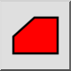
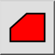
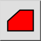
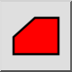

Area poligonale
Barra degli strumenti / Icona:
 

Menù: Info > Area poligonale
Scorciatoia: I, R
Comandi: infoarea | ir
Questa è una traduzione automatica.
Barra degli strumenti / Icona:
 

Menù: Info > Area poligonale
Scorciatoia: I, R
Comandi: infoarea | ir
Questo strumento misura l'area coperta da un poligono e la sua circonferenza.